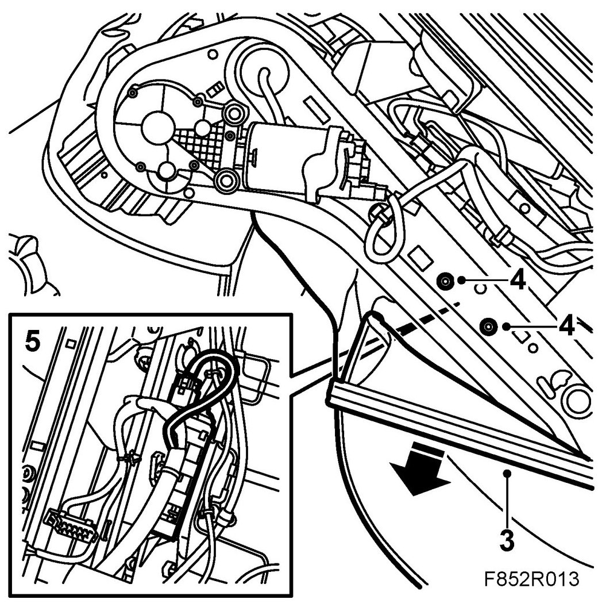
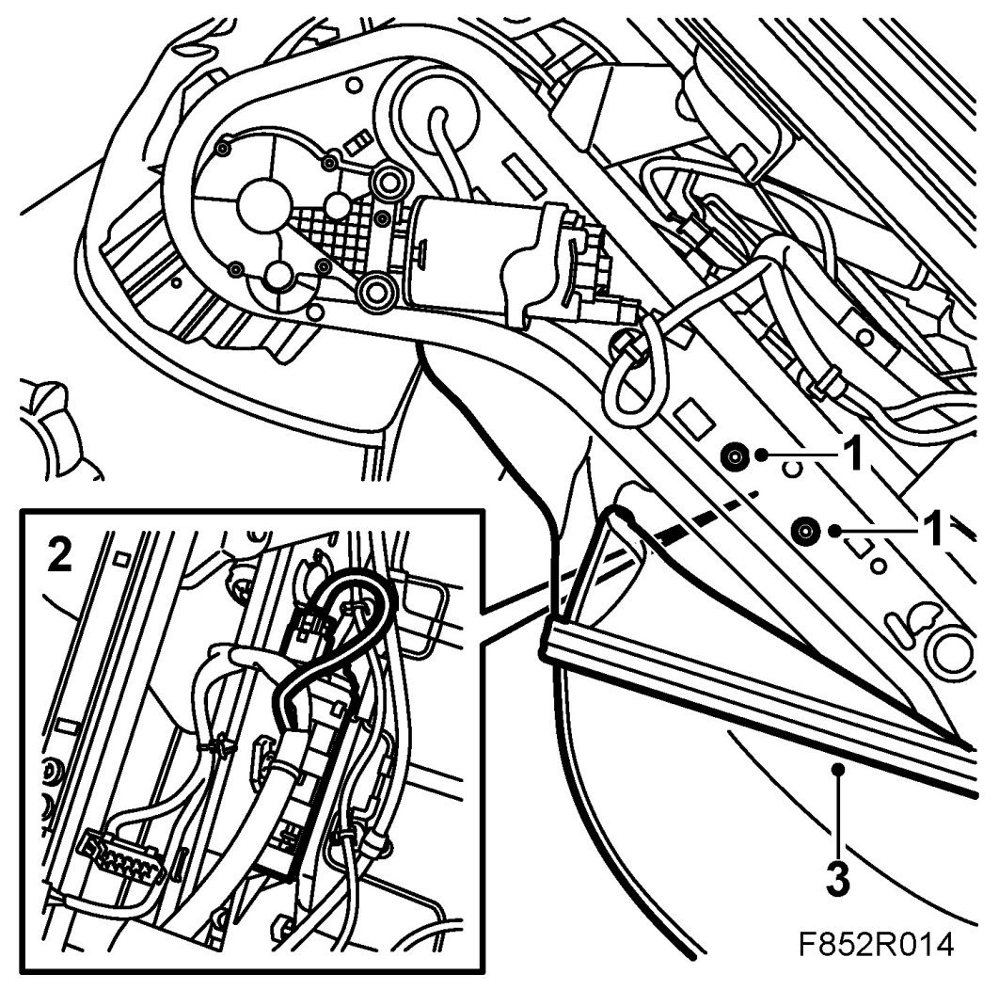

Motor, Front Height Adjustment
Motor, Front Height Adjustment
Removing
1. Remove the seat.
2. Remove front seat side panel.
3. Remove the upholstery on the same side as the motor.

4. Remove the bolts from the front edge of the height adjustment motor.
5. Unplug the motor and undo the clip holding the cable to the motor.
6. Remove the motor by guiding it towards the centre of the seat so that it detaches from the drive shaft.
Fitting
1. Fit the height adjustment motor. Make sure that it engages the drive shaft properly.

2. Plug in the connector and do up the clip holding the cable to the motor.
3. Fit the cushion upholstery on the side of the motor.
4. Fit front seat side panel.
5. Fit the seat.
6. Test run the height adjustment motor.